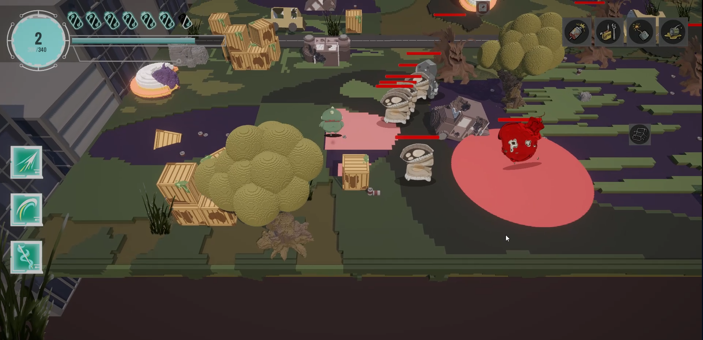
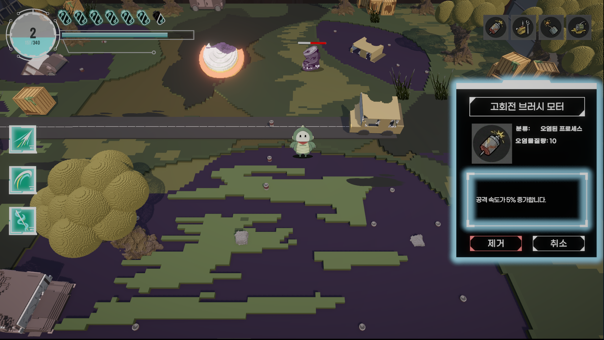

2.5D 액션 로그라이크 · 7인 팀 · 시스템 구조 설계 · 2025.07 ~ 2025.12


| 장르 | 액션 로그라이크, 2.5D |
|---|---|
| 주요역할 및 담당 | 1. 게임 코어 아키텍처 및 플레이어, 직업/스킬/아이템 시스템 2. UI/사운드 시스템 |
| 개발 인원 | 총원 7명 (클라이언트 프로그래밍 2명, 기획 1명, PM/QA 1명, 아트 3명) |
| 개발 환경 | Unity 2022.03.59f1, C# |
| 링크 | GitHub · STOVE |
외부에서 가져온 구조 없이 시스템 구조를 직접 설계했고, 무기를 의존성 주입으로 받게 해 칩셋(직업)만 바꿔도 공격 로직 수정 없이 무기와 스킬이 교체되며, 유물 효과 48종을 이벤트 구독 방식으로 구현했습니다.
저장소에 커밋 172개를 작성했고, 시스템 구조 설계부터 플레이어·유물·인벤토리·UI·사운드까지 클라이언트 핵심을 맡았습니다.
| 내가 구현한 것 |
|---|
|
시스템 구조 설계: Manager 구조, 이벤트 기반 통신, 데이터 로더 무기·스킬 의존성 주입 구조 (칩셋 장착으로 교체) 이벤트 기반 유물 시스템: 효과 48종, 유물 64개, 교환기·정화기 플레이어 이동·대시·공격·애니메이션, 치명타·회피 칩셋 선택·인벤토리·설정·가이드 UI, 경험치·보상 상자 사운드 데이터베이스와 사운드 시스템 |
문제
무기와 스킬은 칩셋(전사, 궁수)마다 다릅니다. 공격을 처리하는 PlayerAttack이 구체적인 무기를 알고 있으면, 칩셋이 늘어날 때마다 공격 코드를 고쳐야 합니다.
설계
PlayerAttack은 추상 클래스 WeaponType(IUse, ICheckUse 구현)과 SkillType[]에만 의존합니다.InventoryManager가 칩셋을 장착할 때 그 칩셋의 무기와 스킬을 PlayerAttack에 주입하고, 해제하면 null로 되돌립니다. DI 컨테이너 없이 프로퍼티(세터)로 주입하는 방식입니다.WeaponSword, WeaponBow 같은 구현체는 각자 공격 동작만 구현하고, 칩셋(WarriorChipset, ArcherChipset)이 무기와 스킬을 묶어 들고 있습니다.효과
새 무기나 칩셋을 추가해도 PlayerAttack은 수정하지 않습니다. 장착 중에 무기를 바꾸는 것도 주입만 다시 하면 됩니다.
// PlayerAttack — 구체 무기를 모르고 외부에서 주입받는다
private WeaponType weaponType; // 의존성 주입
public WeaponType WeaponType { set { weaponType = value; } }
// InventoryManager — 칩셋 장착 시 주입, 해제 시 null
playerAttack.WeaponType = _chipSet.weapon;
playerAttack.SkillTypes = _chipSet.skills;설계
유물 데이터(JSON → ScriptableObject)가 효과 ID와 수치를 들고 있고, RelicEffectManager가 ID로 효과 클래스를 찾아 실행합니다. 각 효과(RelicEffectType.Excute)는 장착하면 필요한 이벤트를 구독하고 해제하면 구독을 해지합니다. 효과를 여러 개 가진 유물(다중 효과)과 조건이 붙는 효과(조건형)도 같은 구조로 처리합니다.
규모
유물 효과 클래스 48종, 이를 조합한 유물 64개(일반 43, 정화 11, 근원 10)입니다. 유물 교환기·정화기, 보상 상자, 유물 생성 치트도 이 구조 위에 연결했습니다.
효과
새 유물은 효과 클래스 하나와 ID 등록, 데이터 한 줄로 추가됩니다. 전투·UI 쪽 기존 코드는 수정하지 않습니다.
어려웠던 점
장착과 해제가 반복되는 구조라 이벤트 구독이 해지되지 않는 오류가 있었습니다(PlayerEvent 체인). 구독과 해지를 Excute(isEquip, info) 한 곳에서 처리하는 구조로 정리해 바로잡았고, 한 유물에 효과가 여러 개 붙는 경우도 같은 방식으로 다루도록 유물 시스템을 리팩토링했습니다.
배운 점
48개 효과 클래스가 RelicEffectManager.cs 한 파일(약 900줄)에 모여 있어서, 효과를 찾고 수정하기 어려웠습니다. 파일이나 폴더로 나눴다면 유지보수가 더 쉬웠을 것입니다.
public class RelicEffectType // 모든 유물 효과의 기반
{
protected RelicInfo relicInfo { get; private set; }
public virtual void Excute(bool isEquip, RelicInfo info) { relicInfo = info; }
}
// ID → 효과 클래스 등록 (일부)
{ 100, typeof(AttackRateBoost) }, { 101, typeof(MoreAttackChance) }, { 102, typeof(CritChanceBoost) }, ...
// 예: 모든 공격이 n% 확률로 한 번 더 적용되는 유물
private class MoreAttackChance : RelicEffectType
{
public override void Excute(bool isEquip, RelicInfo info)
{
base.Excute(isEquip, info);
if (isEquip) AttackEventManager.OnAttackStarted += OnMoreAttackChance;
// 해제 시 구독 해지 (일부 생략)
}
}PlayerEvent, RelicEvent, AttackEventManager 같은 이벤트로 UI, 사운드, 게임 로직 사이의 결합도를 낮췄습니다. Manager 사이는 인터페이스 기반 접근으로 의존성을 최소화했습니다.*DataLoader / *DatabaseSO / *SO)를 씁니다.